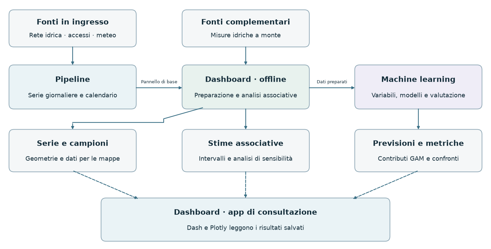
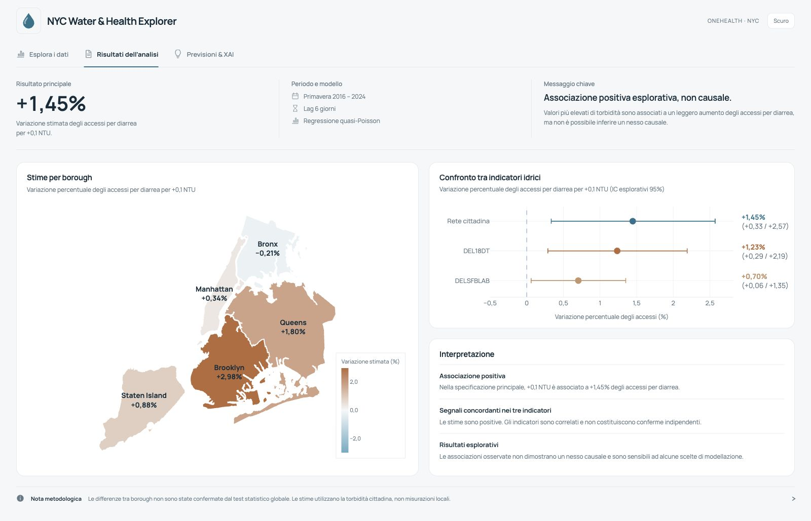

Preparazione dei dati
- Dati idrici
- Conteggi degli accessi in pronto soccorso
- Dati meteorologici
Controllo e allineamento per data
Serie giornaliere per le analisi
Corso di Perfezionamento in Tecnologie Digitali per Ambienti e Sistemi Intelligenti
Il progetto analizza dati giornalieri di New York per studiare se la torbidità dell’acqua sia associata agli accessi in pronto soccorso per diarrea e vomito. Valuta anche se le misure idriche migliorino la previsione degli accessi del giorno successivo e del totale dei sette giorni successivi.
Nella dashboard locale si possono esplorare le serie sanitarie e idriche, consultare le stime associative e vedere quali variabili contribuiscono alle singole previsioni ricostruite su dati passati.
Per la diarrea emerge un’associazione primaverile la cui stima dipende dalle scelte del modello. Il contributo dell’acqua alle previsioni varia tra i confronti.
Le serie giornaliere coprono il periodo 2016–2025, con disponibilità diversa secondo la fonte. Le misure idriche provengono dalla rete di distribuzione e da due punti di monitoraggio a monte. I conteggi di pronto soccorso sono aggregati per giorno e, dove previsto, per borough di residenza. Le osservazioni meteorologiche provengono dalla stazione di LaGuardia. Consulta le fonti.
La torbidità misura quanto le particelle in sospensione rendono l’acqua meno limpida. È espressa in unità nefelometriche (NTU). I conteggi sanitari indicano gli accessi registrati per sintomo.
La scelta della primavera e del ritardo di sei giorni riprende il risultato esplorativo dello studio di Hsieh e colleghi su New York.
Le serie giornaliere alimentano entrambe le analisi qui sotto.
La stima descrive un’associazione. Per stabilire un effetto causale servirebbero altre evidenze.

Il confronto principale usa le stesse 810 date primaverili del 2016–2024 per rendere confrontabili le tre fonti. La regressione quasi-Poisson modella il numero atteso di accessi. Si stima un modello per ciascuna fonte e ciascun esito, controllando per andamento temporale, temperatura e calendario. Le stime sono espresse come variazione percentuale del conteggio atteso per 0,1 NTU in più, con intervalli che tengono conto della dipendenza temporale.
Famiglia e configurazione sono selezionate sui periodi cronologici 2022 e 2023. Gli errori del 2024 e del 2025 sono confrontati con un riferimento settimanale e con la media dei 28 giorni precedenti. L’errore assoluto medio (MAE) è espresso in numero di accessi. Per valutare il contributo idrico, si confrontano configurazioni con e senza misure dell’acqua sulle stesse date. Il riferimento settimanale riprende il ritmo dei giorni della settimana; la media a 28 giorni riassume il livello recente degli accessi.
Su 810 date primaverili comuni, a 0,1 NTU in più nella rete corrisponde una stima di +1,45% nel conteggio atteso sei giorni dopo. Con un controllo temporale meno flessibile la stima scende a +0,85% e l’intervallo comprende lo zero. Per il vomito, tutti e tre gli intervalli del confronto primaverile comprendono lo zero.
Il modello additivo generalizzato (GAM) selezionato ha un errore assoluto medio inferiore a entrambi i riferimenti storici in tutti i compiti a un giorno. Il vantaggio è meno uniforme a sette giorni.
L’aggiunta di misure idriche o di informazioni sul campionamento riduce l’errore medio in alcuni confronti, ma il beneficio non è sistematico. I risultati variano tra anni, esiti, territori e modelli, anche quando si escludono i conteggi sanitari precedenti.
In un esempio illustrativo, per il 12 giugno 2024 il GAM ha previsto circa 221 accessi per diarrea a livello cittadino, a fronte di 228 osservati. Il grafico dei contributi nell’app mostra come storia sanitaria e calendario concorrono a quella previsione. Il MAE riassume invece gli errori su tutto il periodo valutato.
Le stime associative riguardano conteggi aggregati e vanno interpretate senza attribuire effetti causali alle misure idriche. Le prestazioni predittive sono retrospettive e dipendono dalle ipotesi su quando i dati diventano disponibili.

Preparazione dei dati, analisi associative e diagnostica.
Protocollo predittivo, metriche, confronti ed evidenze per l’interpretazione.
Applicazione Dash e dati elaborati per l’avvio in locale.